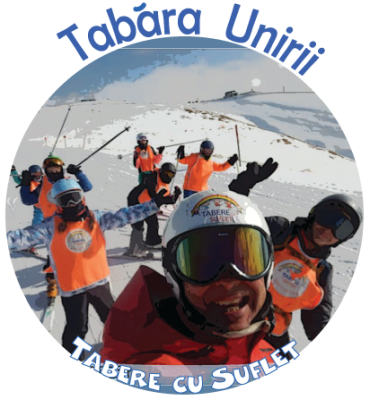

/ Tabere Schi si Snowboard / Tabara Unirii
/ Tabere Schi si Snowboard / Tabara Unirii

Cand? 23 - 25 ianuarie 2026
Unde? Vom sta la Hotel Roberto sau Vila Rapsodia din Sinaia si vom schia in Valea Dorului.
Ce facem? Vom profita din plin de mini vacanta de Ziua Unirii si
in fiecare zi pe care o vom avea la dispozitie vom schia de dimineata pana la inchiderea cablurilor:) Vom urca la Cota 2000 si ne vom antrena pe partiile din Valea Dorului si Valea Soarelui, iar la final vom participa la Cupa Tabere cu Suflet la Schi si Snowboard:) Pret Skipass
Vor fi grupe de intermediari si avansati. Vezi grupele
Seara este dedicata activitatilor recreative.
Daca vreti sa revedeti pozele din anii trecuti:
2020
|
2021
|
2022
|
2023
|
2024
|
2025
Vezi detalii tabara
Varsta recomandata: Nu impunem limite de varsta la activitatile pe care le organizam, insa, din experienta noastra, copiii care vin in aceasta tabara au varste cuprinse intre 8 si 16 ani.
Cat costa? Contributia pentru aceasta tabara este de 300 Euro
Ce asiguram? Cazare Hotel 3*, 2 mese / zi si pranz rece pe partie, instruire Schi / Snowboard, supraveghere copii si, nu in ultimul rand, o atmosfera de Povesti si multa voie buna:) Transportul din Bucuresti este oferit de Asociatia Tabere cu Suflet in limita locurilor disponibile. Vezi ce asiguram
Cum rezerv? Inscrierea se poate face aici.
Rezervarea devine ferma dupa plata unui avans de minim 750 lei. Avansul este nereturnabil. Plata se poate face cash sau in Contul Asociatiei.
La detalii plata va rugam sa treceti "Contract Sponsorizare".
Dupa ce faceti plata, va rugam sa ne confirmati printr-un simplu email.
Contractul se gaseste aici. Pentru validarea inscrierii, va rugam sa il completati si sa ni-l transmiteti.
Reduceri: Membrii Asociatiei Tabere cu Suflet pot beneficia de reducere 15% la aceasta tabara prin programul Prietenii Tabere cu Suflet. Mai multe detalii
De asemenea, functie de momentul platii, se acorda diferite reduceri suplimentare:
- Reducere 12% pentru plata unui avans cu 3 luni inainte de inceperea taberei, prin programul Early Booking EB12
- Reducere 8% pentru plata unui avans cu 2 luni inainte de inceperea taberei, prin programul Early Booking EB8
- De asemenea, in cazul platii avansului cu doua saptamani inainte de inceperea tabarei, contributia se majoreaza cu 5%, iar in cazul platii avansului in ultima saptamana, majorarea este de 10%. Mai multe detalii
Nu mai pot veni: In cazul mai putin fericit in care nu mai puteti veni in Tabara, prin activarea Optiunii Nu-Mai-Pot-Veni contributia se poate recupera integral. Mai multe detalii
Sa ne cunoastem: Tabere cu Suflet este o Familie extinsa, in care impartasim aceleasi Valori. Ne-ar face placere sa facem cunostinta inainte de tabara si sa va povestim despre aceste Valori:)
In plus, Tabara nu poate avea loc fara Incredere, de aceea este important sa ne cunoastem si sa construim impreuna Puntea Increderii. Pentru a facilita acest lucru am creat mai multe oportunitati. Mai multe detalii
Asociatia Tabere cu Suflet: Taberele, Weekendurile Active, precum si celalalte Activitati ale Asociatiei sunt deschise exclusiv membrilor. Mai multe detalii
Daca doriti sa intrati in Familia Tabere cu Suflet si sa aderati ca membru, beneficiind de toate avantajele rezervate membrilor, va rugam sa completati Formularul de Inscriere si sa semnati Cererea de Adeziune.
WeCare: Prin achitarea integrala a contributiei, puteti ajuta un copil fara posibilitati materiale sa vina gratuit in tabere, 10% din costul total al taberei fiind directionat catre programul WeCare Zambet pentru toti Copiii. Mai multe detalii